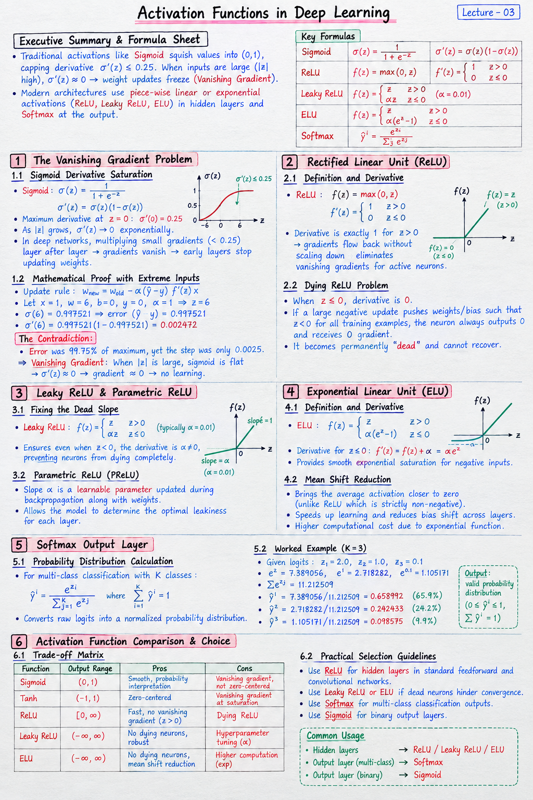

Executive Summary & Formula Sheet
Core Concept: Traditional activations like Sigmoid squish values into (0,1), capping derivative \(\sigma'(z) \le 0.25\). When inputs are large (\(z=6\)), \(\sigma'(z) \approx 0.00247\), causing weight updates to freeze (Vanishing Gradient). Modern architectures use piece-wise linear or exponential activations (ReLU, Leaky ReLU, ELU) in hidden layers and Softmax at the output.
- Sigmoid Derivative: \(\sigma'(z) = \sigma(z)(1 - \sigma(z))\)
- ReLU: \(f(z) = \max(0, z)\); \(f'(z) = 1 \text{ if } z > 0 \text{ else } 0\)
- Leaky ReLU: \(f(z) = z \text{ if } z > 0 \text{ else } \alpha z\) (typically \(\alpha = 0.01\))
- ELU: \(f(z) = z \text{ if } z > 0 \text{ else } \alpha(e^z - 1)\)
- Softmax: \(\hat{y}_i = \frac{e^{z_i}}{\sum_{j} e^{z_j}}\)
Handwritten Short Notes

Click image to open high-resolution version in new tab
1. The Vanishing Gradient Problem
1.1 Sigmoid Derivative Saturation
For Sigmoid activation:
The maximum value of the derivative occurs at \(z = 0\) where \(\sigma'(0) = 0.25\). As \(|z|\) grows, the derivative exponentially approaches zero. In deep networks, multiplying terms smaller than 0.25 layer after layer causes gradients to vanish, stopping early layers from updating weights.
1.2 Mathematical Proof with Extreme Inputs
Consider a single neuron update rule: \(w_{\text{new}} = w_{\text{old}} - \alpha (\hat{y} - y) f'(z) x\). Let \(x=1, w=6, b=0, y=0, \alpha=1\). Then \(z = 6\). Computing \(\sigma(6) = 0.997521\), so error \((\hat{y} - y) = 0.997521\). However, the derivative \(\sigma'(6) = 0.997521 \times (1 - 0.997521) = 0.002472\).
Error was 99.75% of maximum, yet the step was only 0.0025. The culprit:
2. Rectified Linear Unit (ReLU)
2.1 Definition and Derivative
ReLU Definition:
Its derivative is constant:
Because the derivative is exactly 1 on the positive domain, gradients flow back without scaling down, eliminating vanishing gradients for active neurons.
2.2 Dying ReLU Problem
When \(z \le 0\), ReLU derivative is 0. If a large negative update pushes a neuron's bias/weights such that \(z < 0\) for all training examples, the neuron will always output 0 and receive 0 gradient. It becomes permanently "dead" and cannot recover.
3. Leaky ReLU & Parametric ReLU
3.1 Fixing the Dead Slope
Leaky ReLU Definition:
This ensures that even when \(z < 0\), the derivative is \(\alpha \neq 0\), preventing neurons from dying completely.
3.2 Gradient Flow on Negative Inputs
In Parametric ReLU (PReLU), the slope \(\alpha\) is treated as a learnable parameter updated during backpropagation alongside weights, allowing the model to determine the optimal leakiness for each layer.
4. Exponential Linear Unit (ELU)
4.1 Smooth Exponential Saturation
ELU Definition:
Derivative for \(z \le 0\):
4.2 Mean Shift Reduction
By bringing the average activation closer to zero (unlike ReLU which is strictly non-negative), ELU speeds up learning and reduces bias shift across layers, though it incurs higher computation cost due to the exponential function.
5. Softmax Output Layer
5.1 Probability Distribution Calculation
For multi-class classification with \(K\) classes, Softmax converts raw logits \(z_1, z_2, \dots, z_K\) into a normalized probability distribution:
5.2 Multi-class Classification Worked Example
Given logits \(z_1 = 2.0, z_2 = 1.0, z_3 = 0.1\):
- \(e^{2.0} = 7.389056\), \(e^{1.0} = 2.718282\), \(e^{0.1} = 1.105171\)
- \(\sum e^{z_j} = 7.389056 + 2.718282 + 1.105171 = 11.212509\)
- \(\hat{y}_1 = 7.389056 / 11.212509 = 0.658992\) (65.9%)
- \(\hat{y}_2 = 2.718282 / 11.212509 = 0.242433\) (24.2%)
- \(\hat{y}_3 = 1.105171 / 11.212509 = 0.098575\) (9.9%)
6. Activation Function Comparison & Choice
6.1 Trade-off Matrix
Sigmoid: Output range (0,1). Pros: Smooth, probability interpretation. Cons: Vanishing gradient, not zero-centered.
Tanh: Output range (-1,1). Pros: Zero-centered. Cons: Vanishing gradient at saturation.
ReLU: Output range [0, \(\infty\)). Pros: Fast, no vanishing gradient for \(z>0\). Cons: Dying ReLU.
Leaky ReLU / ELU: Output range (\(-\infty, \infty\)). Pros: No dying neurons, robust. Cons: Hyperparameter tuning (\(\alpha\)).
6.2 Practical Selection Guidelines
Default to ReLU for hidden layers in standard feedforward and convolutional networks. Use Leaky ReLU or ELU if dead neurons hinder convergence. Use Softmax for multi-class classification outputs and Sigmoid for binary output layers.